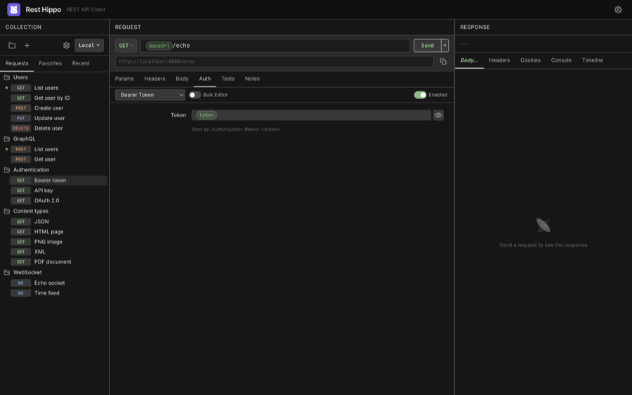
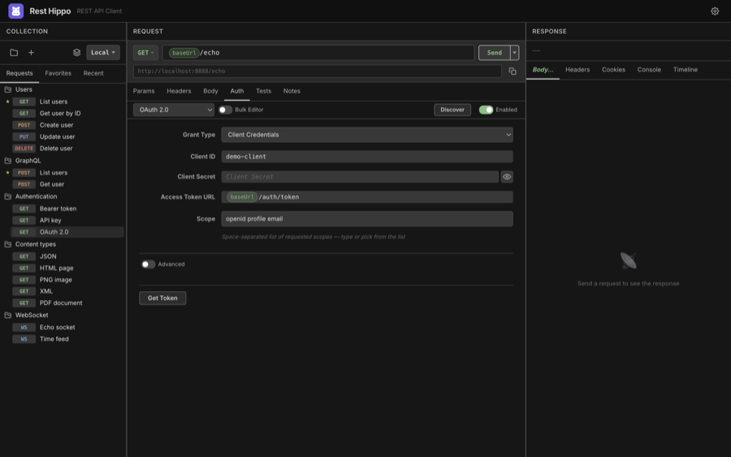

Authentication
The Auth tab attaches credentials to a request. Pick a type from the dropdown and fill in the fields — Rest Hippo applies the right header (or query parameter) automatically when you send. Use the Enabled toggle to turn auth on or off without losing the settings.

Every secret field (passwords, tokens, client secrets, keys) is masked with
a reveal toggle and is encrypted at rest, so credentials never sit in plain
text on disk. All fields accept {{variables}},
so you can keep secrets in a secure environment variable and reference them here.
Types at a glance
| Type | What it sends |
|---|---|
| None | No credentials |
| API Key | A key as a header or query parameter |
| Basic | Authorization: Basic … (username:password, base64-encoded) |
| Bearer Token | Authorization: Bearer <token> |
| Digest | RFC 2617/7616 challenge-response (handles the 401 round-trip) |
| NTLM | Microsoft NTLM handshake (username, password, domain, workstation) |
| AWS IAM | AWS Signature V4 signing (access key, secret, region, service) |
| OAuth 1.0 | OAuth 1.0a request signing (Authorization: OAuth …) |
| OAuth 2.0 | A full OAuth 2.0 / OIDC flow (see below) |
API Key
Enter a key name and value, and choose whether to add it to the Header or the Query Param. Rest Hippo suggests common key names as you type.
Basic
Enter a username and password. Rest Hippo base64-encodes them into the
Authorization header.
Bearer Token
Enter a token. Rest Hippo sends Authorization: Bearer <token>. The tip line under
the field shows exactly what will be sent.
Digest & NTLM
For Digest, supply a username and password; Rest Hippo performs the challenge-response handshake (including the initial 401) for you. NTLM adds optional domain and workstation fields for the multi-leg Windows handshake.
AWS IAM (SigV4)
Sign requests with Signature Version 4: enter your Access Key ID, Secret Access Key, Region, and Service (Rest Hippo can infer the service from the host), plus an optional Session Token. The signature, date, and signed-headers are computed at send time.
OAuth 1.0a
For legacy APIs that still use OAuth 1.0a, enter your Consumer Key and
Consumer Secret, and (for an access token) the Token and Token
Secret. Choose a Signature Method — HMAC-SHA1 (the most common),
HMAC-SHA256, or PLAINTEXT — and optionally a Realm. Rest Hippo signs the
request at send time, computing the signature over the method, URL, and
parameters and adding the Authorization: OAuth … header; the oauth_nonce and
oauth_timestamp are generated automatically for each request.
OAuth 2.0
The OAuth 2.0 type supports the full set of grant types and OIDC discovery:

- Grant Type — choose Authorization Code, Implicit, Client Credentials, Resource Owner Password, Device Authorization, or Token Exchange.
- Fill in Client ID, Client Secret (for confidential clients), the
Authorization URL and Access Token URL, and the Scope (with
autocomplete for common scopes like
openid,profile,email). - Click Get Token. For browser-based flows (Authorization Code, Implicit), Rest Hippo opens a popup window for you to log in, intercepts the redirect, and exchanges the code for an access token. The token is then attached to your request.
Device Authorization (RFC 8628) — for input-constrained or headless
clients. Provide the Device Authorization URL, Access Token URL, and
Client ID, then click Get Token: Rest Hippo shows a user code and a
verification URL to open on another device, and polls in the background until
you approve (handling the standard authorization_pending / slow_down
back-off) or the code expires.
Token Exchange (RFC 8693) — swap one token for another. Provide the Subject Token and its Subject Token Type, and optionally an Actor Token (for delegation), Requested Token Type, Audience, and Resource. The exchanged token is cached like any other grant.
OIDC Discovery — click Discover to fetch a provider's
.well-known/openid-configuration and auto-populate the authorization and token
URLs and the available scopes.
Advanced — expand the Advanced section for fine control over
Response Type, State, where credentials go (header vs body),
Audience, Resource, Origin, and a custom Header Prefix.
Authorization Code flows use PKCE by default for public clients, so you can authenticate against modern providers without embedding a client secret.